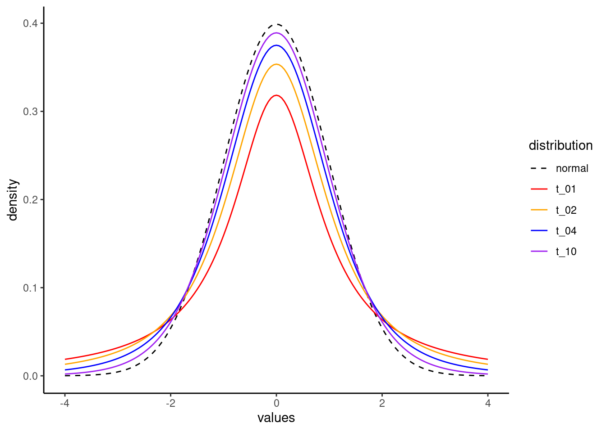

library(ggplot2)
library(tidyr)
pl <- read.csv("FatherSonHeights.csv")The t distribution, computing p-values, and constructing confidence intervals.
What’s in this tutorial?
This tutorial walks through some of the calculations and code related to a few topics. First, we will examine the t distribution in a bit more detail. I mentioned t values in the Unit 5 reading, as an example of a test statistic, but I did not explain much about it. We will fill in those gaps here.
The t value is an important distribution, especially for NHST, and we will go through how p-values are computed from this distribution.
Finally, we will combine these topics together in order to show how to construct a precise confidence interval around an estimate.
I recommend going through the Unit 5 reading before going through this tutorial, in order to get more background on these concepts and their uses.
Loading data and packages
We will once again use the Pearson & Lee (1908) data on the heights of fathers and their sons, and we will use the ggplot2 package for some graphs. Finally, we will also use the dplyr and tidyr packages for some data manipulation.
The t distribution
Our initial focus in Unit 2 was on the uniform and normal (Gaussian) distributions. However, these are just a few of many important and useful distributions that have been described and formulated by statisticians.
One of the most important is the t distribution.1 Here is a run down of some of the highlights of this distribution:
1 This is sometimes called the “Student’s t”, and there’s a fun bit of trivia about that name. The originator of the t distribution and the t-test was a statistician named William Gosset, whose day job was to work as a brewer and chemist for the Guinness beer company at the beginning of the 20th century. He developed these concepts as a way for Guinness to improve their brewing processes. But this was a “high tech” advancement at the time, and Guinness did not want to risk tipping off their competitors that they were using such advanced mathematical techniques to improve their beer. So Gosset had to publish much of his influential work under a pseudonym, “Student.”
- The t distribution has just a single parameter: degrees of freedom, which has to be a positive number (and is usually an integer).
- The distribution is very similar to a standard normal distribution, but with thicker “tails”, meaning that extreme values that are farther from the central values are more common in the t than in a normal.
- As the degrees of freedom get larger, the closer the distribution resembles a standard normal distribution.
- The distribution is a good description of the difference between two sample means.
- The distribution is used to assess statistical significance in regression parameters.
Visualizing the distribution
In order to illustrate a few of these points, let’s visualize what the distribution looks like, by changing the degrees of freedom, and comparing these to a standard normal distribution.
Densities
First, just as we used dnorm() to calculate densities for values from normal distributions, we can use dt() to do the same for the t distribution. One difference is that while we needed to provide both a mean and standard deviation for the normal distribution, all we need for a t distribution is the degrees of freedom parameter.
The following code starts by creating a bunch of values from -4 to 4, and then uses the dt() function to calculate the corresponding t-distribution densities, for a few different values of degrees of freedom (1, 2, 4, and 10).
x_vals <- seq(-4, 4, .05)
t_01 <- dt(x_vals, 1)
t_02 <- dt(x_vals, 2)
t_04 <- dt(x_vals, 4)
t_10 <- dt(x_vals, 10)We will visualize these below, after doing a little work to make the graph prettier.
Degrees of freedom
But first, what’s a “degree of freedom”? This is a concept that comes up in other places in statistics, so it’s worth spending a little time on. Let’s imagine that we are talking about estimating a mean for a set of values. And let’s say that we play a guessing game, where we both know the mean, but we don’t yet know the values we are averaging. My job is to make up values, and my only rule is that by the time I finish listing the numbers, they have to average out to the mean that we already know. Your job is to try to guess each of the numbers that I pick. How well do you think you could do?
As an example, imagine that we know that the mean is 10. For the first number, you have essentially no chance at guessing, because I could pick literally any number. I have total freedom in determining a value. So I’ll just pick -3,742.933. Bet you couldn’t have guessed that! But now, if you just do a little math, you know exactly what the next number will be, because my hands are tied. I have to pick 3,762.933 if the mean value is already determined to be 10.
Now imagine that we play the game again, and we still set the mean to be 10, but now I have 100 numbers to pick. How many do you think you could get? After thinking about for a bit, you should come to the conclusion that for the first 99 numbers, I have total freedom, and there’s almost zero chance of you reading my mind to multiple decimal numbers. But again, once we get to that final number, as long as you do the math, you have a 100% chance of guessing correctly, because we both know what the final mean value is.
In statistical terms, this situation describes how I have a very simple model with one parameter, namely the mean. And so I end up having degrees of freedom (the freedom to be able to pick any number I want) equal to the total number of data points, minus one. As we have more complex models with more parameters, those parameters each “spend” a degree of freedom.
If you think about a simple regression, it has two parameters: the intercept and slope. And if there are only two data points, there can’t be any “noise” in the model because just having two points defines the line exactly. There are no degrees of freedom left! Similarly, if we have three data points in a regression, then there’s just one degree of freedom left, because if we both know the slope and intercept, I could pick a point anywhere I wanted in coordinate space for the first point, but then I wouldn’t have any choice about where to put the last two points in order to make the regression line fit the target intercept and slope.
This pattern continues as we have models with more parameters. Therefore, the general formula (most of the time) is that the degrees of freedom parameter is calculated as \(N\), the number of data points, minus \(k\), the number of parameters.
Bringing this back to the t distribution, this means that as we get more data, the degrees of freedom will also increase, and as the degrees of freedom increase, the t looks more and more like a standard normal distribution.
Plotting
So let’s visualize this.
In this next step, I take the densities we calculated above, and put them together into a data frame, along with densities calculated from a normal distribution, for comparison.
distplot_data <- data.frame(values = x_vals,
normal = dnorm(x_vals, 0, 1),
t_01 = t_01,
t_02 = t_02,
t_04 = t_04,
t_10 = t_10)Next, I’ll use a handy function from the tidyr package in order to reshape the data frame.
distplot_long <- pivot_longer(distplot_data, cols = normal:t_10,
values_to = "density",
names_to = "distribution")Finally, we can use this reshaped data to plot the different curves in different colors. The normal distribution is plotted in black with a dashed line. As you can see, as the degrees of freedom parameter increases, it gets closer to a normal distribution.
ggplot(distplot_long, aes(values, density)) +
geom_line(aes(color = distribution, linetype = distribution)) +
scale_linetype_manual(values = c(2, 1, 1, 1, 1)) +
scale_color_manual(values = c("black", "red", "orange", "blue", "purple")) +
theme_classic()
Neat!
Calculating a p value from a t distribution
Populations and samples
One of the main roles of the t distribution is as a test statistic, which means that the distribution holds under a certain null hypothesis. One original application was for evaluating whether two populations of values have different means, based on the means of two samples.
For example, take the father/son height data we’ve looked at throughout the course. We have a sample of fathers and a sample of (adult) sons, and normally we wouldn’t necessarily think of these as separate groups, since all fathers are also someone’s son. But these also represent different generations, so in that sense they could be from two different populations.
This raises a question: do these two generations of men differ in their average height? We are asking a question about the populations (the overall groups of men from these two generations), but we only have samples of data.
What Gosset showed was that if these two populations had exactly the same average height – a form of the null hypothesis, since the difference is hypothesized to be exactly zero – you could calculate a statistic that followed the distribution that we now call the t distribution. And if that t value was unexpectedly large (positive or negative), it would produce a small p value, indicating that the data would be surprising to find if the null hypothesis were true.
So let’s take an even smaller sample of data from the full data set, and go through the steps of calculating the t and p values for this kind of test. First, I will select a random sample of 30 rows of data from our full data set (representing 30 father-son pairs), and by using the set.seed() function, I can make sure that we pull the same 30 pairs each time we run this code.
set.seed(33)
father_son_sample <- pl[sample(nrow(pl), 30, replace = FALSE), ]Next, let’s compute the difference between the two. The following gets the pairwise differences and puts them in a new column. We can inspect the top few rows to check that we did this correctly.
father_son_sample$difference <- father_son_sample$father_height - father_son_sample$son_height
head(father_son_sample) observation father_height son_height difference
1288 1288 67.5 66.5 1
2876 2876 66.5 69.5 -3
1138 1138 65.5 66.5 -1
4072 4072 70.5 72.5 -2
1017 1017 64.5 66.5 -2
688 688 65.5 65.5 0Computing standard errors and t values
Now all we need to compute the t test is to divide the mean difference by the standard error of the mean. The standard error of the mean difference is the standard deviation of the vector of differences, divided the square root of \(N\), the total number of difference values. In equation form, the standard error of the mean looks like this:
\[t = \frac{\sigma}{\sqrt{n}}\]
In order to capture this in R, we can just write out the code for these calculations. But this is a good opportunity to show you how to make your own functions in R. In the code below, we can create a new function definition. In this case, we decide that it will take an argument called x, and it simply performs the standard error calculation to return the result. We then show that this works on the column of height differences that we added to our data frame above. Finally, we can calculate the t value by dividing the mean of the differences by this standard error of the mean.
# define a function
std_err_mean <- function(x) {
return(sd(x)/sqrt(length(x)))
}
# use our new function
(std_err_differences <- std_err_mean(father_son_sample$difference))[1] 0.3895178# calculate t
(t_diff <- mean(father_son_sample$difference)/std_err_differences)[1] -2.567277The result is a t value of -2.57 (rounding off to two decimals). The t distribution is symmetrical around zero, so the negative doesn’t really matter for our purposes. All it indicates is that the sons are on average taller than their fathers (rather than vice versa), since we subtracted the son heights from the father heights. If we had subtracted in the other direction, we would have ended up with a positive t, but the same value.
Testing the t
The final step is to compute a p-value, which tells us how surprising this t value of -2.57 would be if the null hypothesis were true. How do we know if -2.57 is a surprising value? First, look up at the graph of the t distribution from earlier. Clearly -2.57 is in the left tail, so it’s fairly extreme. What we want is to know exactly how much of the t distribution would be as negative or more negative than this value, essentially the area under the curve to the left of -2.57. But in this kind of test, we also need to test the other side, how much of the distribution would be as high or higher than 2.57. This is also why the +/- sign doesn’t matter so much, because we almost always perform two-tailed tests, since we could have found out that the sons were taller or shorter than the fathers. What we care about is that whichever direction this difference is, it’s significantly different from zero, so that we can reject the null hypothesis.
We can use the pt() function in R, but we need one more piece of information: the degrees of freedom. This is because this is the one parameter of the t distribution. You can review the discussion from the Unit 5 reading, but in brief since we have one parameter in our analysis (the mean value we are testing), our degrees of freedom is the number of observations minus one (because there’s one parameter), so that’s 30 - 1 = 29.
Armed with a t and a degrees of freedom, we can now calculate how much of the distribution is at or lower than our t value of -2.57:
(pt(-2.57, 29))[1] 0.007786343But recall that we also need the upper tail, so we can essentially multiply this by two in order to get the final p-value.
(p_value <- 2 * pt(-2.57, 29))[1] 0.01557269And since this p-value of around 0.016 is less than 0.05, we say that this difference is statistically significant, and we can reject the null hypothesis.
In other words, we can end up concluding that on average, we expect the average height of the younger generation to be taller than the older generation.
Regression coefficient tests
The process above is essentially the same when we test the signficance of regression coefficients. A separate tutorial shows you how to extract these values from an lm object in R, so you don’t need to do any of these calculations, but they work essentially the same way. The t is the result of the regression parameter (for example, a slope) divided by its standard error, and the degrees of freedom are determined as the number of observations minus the number of parameters. Once you have a t and a degrees of freedom, you can calculate the p-value just the same as we did here above.
Constructing a confidence interval
The final step in this tutorial are to apply these same concepts in a slightly different way, in order to construct a confidence interval.
The first step is to decide on the confidence level. This is similar to setting an alpha threshold for what counts as a “significant” p-value threshold. The higher the “confidence”, the wider the interval will be. This makes intuitive sense if you think about it. Imagine that I was meeting a new person, and was asked to guess their height. If I made a guess with a large interval, like saying, “I think they will be between 50 and 80 inches tall,” I could be highly confident that they would fall in that range. Conversely, if I guessed a narrower range, like between 67 and 70 inches, I would have much less confidence that I would be correct.
Setting a confidence level is usually expressed as a percentile, and similar to how p < 0.05 is a typical threshold for significance, it’s common to construct a 95% confidence interval. This is generally interpreted to mean that you can be 95% confident that the true value lies in this interval.2 You could construct 50% confidence intervals, or 99%, or 83%, or whatever you wanted. But 95% is the most typical choice.
2 Technically, the proper frequentist definition is to say that if you were able to repeat this same data collection (with new samples) many, many times, and you constructed a confidence interval each time, 95% of the confidence intervals from these hypothetical data sets would include the “true” value of the parameter. But in practice we treat it as “close enough” to say that when we construct a single 95% confidence interval, we can have 95% confidence that the true values lies inside that interval.
The steps for constructing a confidence interval are as follows:
- Obtain an estimate (which can be a mean, or a regression parameter, or whatever).
- Obtain the standard error of that estimate.
- Obtain “critical values” from the t distribution3 for the high and low ends of the interval.
- Multiply the critical t values by the standard error.
- Add the results of step 4 (one should be negative and the other positive) to the mean, so you end up with an interval that goes both above and below the mean.
3 If you are constructing a confidence interval around a mean or a regression parameter (which are very common things to do), you definitely use a t distribution. But there are other times when you might use a normal or other distribution.
Let’s use these steps to construct a confidence interval around the height differences that we were just examining.
First, let’s re-compute the mean and standard error, just for illustration. We can re-use that new function we made above called std_err_mean() as well.
(mean_diff <- mean(father_son_sample$difference))[1] -1(stderr_diff <- std_err_mean(father_son_sample$difference))[1] 0.3895178That takes care of steps 1 and 2, but for step 3, what is a “critical value”? Remember how as the t gets larger, the p value gets smaller, and at some point we would cross the p < 0.05 threshold? The “critical value” is the value of t that corresponds to the target p value. When we have a 95% confidence interval, this means we are trying to cover the middle 95% of the data. This in turn means that the boundaries of our interval are at the 2.5% and 97.5% levels of the distribution. To put it another way, if we want the middle 95% of the distribution, what we’re left with is 2.5% of the data at the bottom and at the top of the distribution.
The following code makes use of the qt() function,4 so that we can give it these % levels and it will give us back the corresponding critical t values. Again, we need to provide the degrees of freedom parameter for the t, and again, it’s the number of observations minus the number of parameters. Here we are just looking at the mean, so it’s 30 - 1 = 29 once more. The code below shows us that for 29 degrees of freedom, the critical t values are -2.045 and 2.045.
4 At this point we have now seen the full “family” of distribution functions. the r version, like rnorm() or runif() or rt() generates random numbers from that distribution. The d function, like dnorm() or dt() takes values from the distribution and returns the probability density for each. The p function, like pnorm() or pt(), takes values from the distribution and returns the cumulative probability density (aka, “how much of the distribution is equal to or less than this value?”). And now finally the q function, like qnorm() or qt(), is the reverse, taking p-values, which you can also think of as quantiles, and returning the critical values at those points in the distribution.
(high_low <- qt(p = c(0.025, 0.975), df = 29))[1] -2.04523 2.04523Now, all we need to do is multiply these critical t values by our standard error, and add them both to the mean.
(confint_95 <- (high_low * stderr_diff) + mean_diff)[1] -1.7966534 -0.2033466This tells us that while the mean difference in this small sample of 30 father-son pairs is -1 (meaning that fathers are on average 1 inch shorter than their sons), the 95% confidence interval is between -1.80 and -0.20 inches. This means that since we only have 30 pairs here, we have some uncertainty about whether the overall difference in the larger population is exactly -1, but we can still be 95% confident that the overall difference will fall between -1.80 and -0.20.
If we wanted to be 99% confident, we would need to compute different critical t values, with the following results:
(higher_lower <- qt(p = c(0.005, 0.995), df = 29))[1] -2.756386 2.756386(confint_99 <- (higher_lower * stderr_diff) + mean_diff)[1] -2.07366145 0.07366145At this point, our interval stretches from -2.07 inches to positive 0.07 inches. So at this point, we can’t quite be 99% confident that fathers in the larger population are shorter than their sons on average. But we can say that if they aren’t shorter, they almost certainly are not much taller, and they are possibly up to 2 inches shorter.
With larger samples of data, the standard error will typically shrink, so the confidence interval will also usually get narrower. The only time adding data may not reduce your uncertainty is if the new data is very different or much more variable than the previous data.
Confidence intervals for regression parameters
This process actually works exactly the same for regression parameters; all the same steps. You just need to make sure you’re getting the right degrees of freedom, but that’s still just the number of observations minus the number of parameters. So if you have a more complex model with 2000 observations and 20 parameters, you’d still have 1980 degrees of freedom.
Otherwise, as long as you get the estimates and standard errors for the parameter, you can easily follow the steps here to compute a confidence interval, and you can pick any confidence level you want, just by changing the critical t values.
Other confidence intervals
In fact, this process is so general, it applies nearly the same for virtually any other distribution. Usually, the only thing that might change is how the standard errors are calculated. For example, if your data is a proportion instead of a mean – imagine a poll result with 53% of the vote going to a particular candidate – you could calculate a confidence interval around that estimate, but the formula for the standard error of a proportion is different so you would need to apply that.
But again, if you have an estimate and a standard error, you can get a confidence interval.
Quick and dirty confidence
Finally, I should point out that while getting these exact calculations is important if you want to have a confidence interval that is precisely 95% or whatever you pick, you may have noticed that a lot of the critical values are hovering around 2. It turns out that if you just take +/- 2 standard errors around the mean, that is a quick approximation to a 95% confidence interval. If you take +/- 1 standard error, that’s roughly a 68% confidence interval. Remember that the “confidence” refers to the confidence that the “true” or population value is within the interval. If you have a wider interval, you can be more confident that the true value is contained in that interval.
Summary
There are many functions in R that will calculate some of these quantities for you, depending on what kind of analysis you are performing or what kind of data you have. For example the summary output for linear models in R automatically computes standard errors, t values, and p-values. But the ability to compute these yourself can come in handy, and this is especially true with confidence intervals.
In fact, the ease of constructing confidence intervals should further encourage you to examine these often. And if a quick-and-dirty method of +/- 2 standard errors around the mean is a pretty good approximation of 95% confidence, there’s almost no excuse not to try to use them more, as a way to help you think about the uncertainty in your estimates.
Embrace uncertainty, and work to understand it!